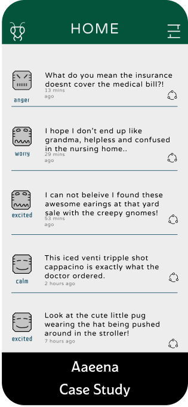
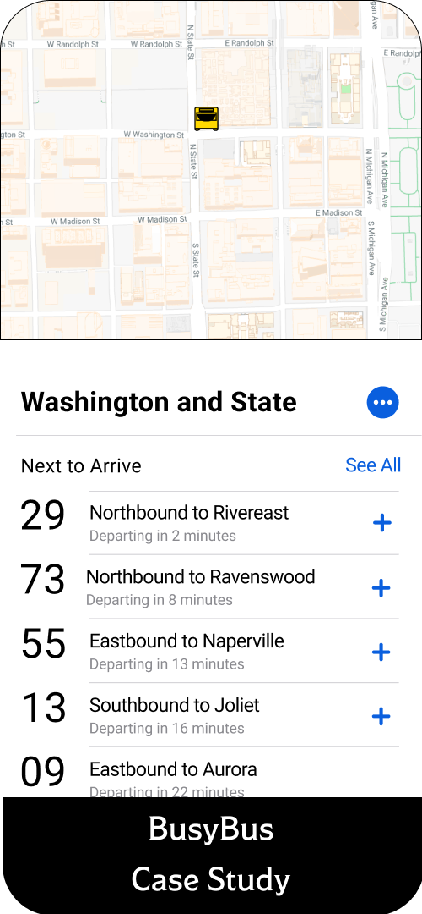

Nature is my greatest teacher. I love working with the land and feel good design benefits all life. For my undergraduate degree I studied musical instrument design and desert farming techniques of the Zuni and Southwestern indiginous Tribes of the United States. I call Palo Alto my home so I can be close to the old growth redwood groves. I examine and incoperate timeless asthetics into my works. Ancient symbology is encoded within each of us and it is my job as a designer to express that thought and blend it with modern technology.

